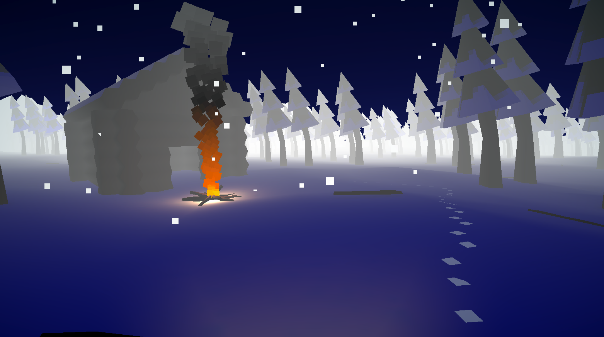
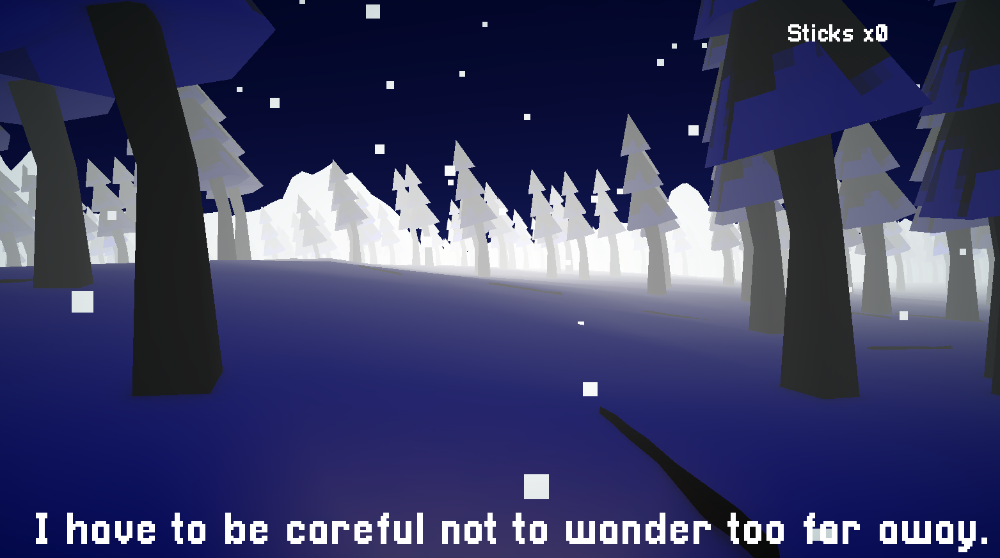
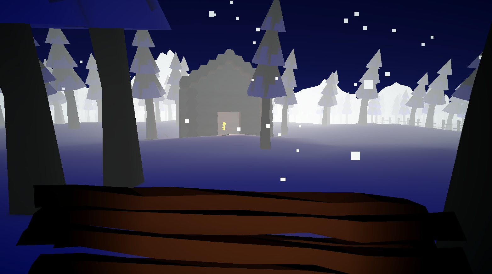

Freezing Cold
A solo exploration/puzzle game built entirely from scratch. Code, art and 3d models, etc. all made by hand, in less than 7 hours for a timed school exam. The player wakes up lost in a snowy forest at night and has to gather sticks and keys, unlock gates, and follow environmental hints to survive until morning, with footprints fading in the snow as they walk. The game features 3 different endings depending on how the player handles the night, plus fully working main menu, pause menu, and end screens. Given the time constraint, it's a small scope prototype, but one I'd like to keep expanding with more systems and content.
Role in the project
Solo project, built from an empty template under a strict ~7 hour time limit for a school exam. Every asset (models, materials, UI, sound) was made from scratch, alongside the full gameplay loop.
- Player controller and footstep/footprint system
- Key, stick and gate interaction mechanics
- Environmental hint triggers and 3 branching endings
- Functional main menu, pause menu and end screens
- Terrain, snow environment and all assets built from scratch
Gallery


